Zoldify · nghiệm thu sơ đồ · 14-08-2026
Toàn bộ sơ đồ được mở bằng draw.io thật và chụp lại, không chỉ chạy qua bộ kiểm cú pháp. Bảy cái được soi kỹ trong đợt này; sáu trong bảy có lỗi. Dưới đây là từng lỗi: cái gì hỏng và nay nó thành gì.
npm run drawio:check báo 14/14 hợp lệ trên
đúng những file này, cả trước lẫn sau khi sửa. Nó kiểm XML, id, tên shape —
nó không biết một cái nhãn có đang che mất tên trạng thái hay không.
Cú pháp hợp lệ không nói gì về việc hình có đúng.
Đó là lý do có npm run drawio:shoot.
06-activity-diagramHai nhánh sau fork cùng chạy vào một activity final. Ngữ nghĩa UML: chạm activity final là cả hoạt động dừng — nhánh về đích trước giết nhánh còn lại.
Thêm thanh join gộp hai nhánh trước khi kết thúc.
Roll back và webhook trùng khoá cũng nối vào chính activity final đó, ở tận đáy làn Buyer.
Mỗi nhánh kết thúc ngay tại chỗ nó xảy ra. Webhook trùng dùng flow final — vòng tròn dấu X, luồng dừng nhưng hoạt động chạy tiếp.
Nhánh Cash on delivery chạy xuyên qua thân ba ô: waypoint đặt ở x=490 trong khi các ô bắt đầu ở x=480.
Làn giữa chừa hẳn rãnh trống x 460–560, không hình nào được đặt vào đó.
Mũi tên Choose payment method → Lock product rows đi ngược lên trên.
Cột làn giữa bắt đầu bên dưới ô cuối của làn Buyer, mọi mũi tên đều xuôi xuống.
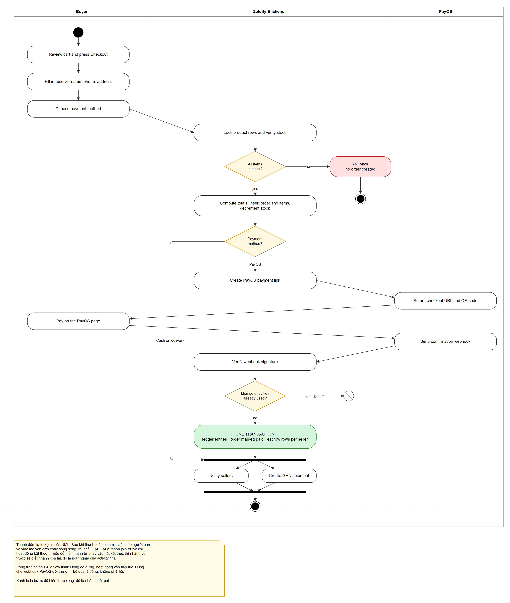
09-sequence-diagramKhung alt chỉ có một ngăn; nhánh else [key already used] bị đẩy xuống thành ghi chú rời ở đáy trang. Một alt một ngăn nói rằng khi khoá đã dùng thì không có gì xảy ra — trong khi đường đi ấy vẫn phải đóng transaction mở ở bước 4.
Đủ hai ngăn, vách ngăn nét đứt, guard nằm trong khung.
Nhãn bước 8 tràn lên thanh kích hoạt của lifeline.
Giãn khoảng cách LedgerService ↔ MySQL lên 320px, rộng hơn nhãn dài nhất.
Tab alt đè lên thanh kích hoạt của LedgerService.
Mép trái khung lùi ra để tab kết thúc trước thanh kích hoạt.
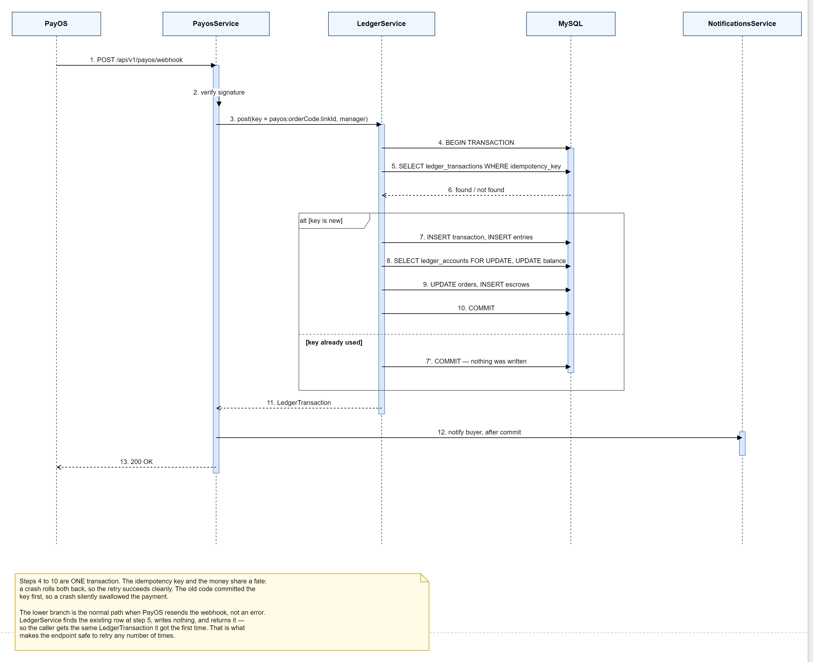
r3-component-bounded-contextsSơ đồ tự mâu thuẫn: ghi chú viết “Arrows point DOWNWARD only” nhưng Ordering và Money lại vẽ ngang hàng, mũi tên giữa chúng nằm ngang. Tuyên bố kiến trúc phân tầng mà không xếp theo tầng thì không ai kiểm chứng được bằng mắt.
Xếp đúng bốn tầng: Ops → Ordering → (Catalog · Money · Messaging) → Identity.
Ordering → Money cắm vào cạnh trái Money, đúng chỗ ba ô cổng của ký hiệu component — nhìn ra hai đầu mũi tên chồng nhau.
Vào từ cạnh trên, tránh hẳn vùng cổng.
Ops → Catalog và Ops → Money đi xuyên qua Ordering.
Bẻ góc vuông, chạy trong rãnh trống hai bên.
Cố ý để nguyên. Còn một chỗ hai đường cắt nhau
(Ordering→Catalog × Ordering→Identity). Không khử được:
Ordering ở trên-phải, Catalog ở trái, Identity ở dưới — mọi đường sang trái đều
phải cắt qua đường đi xuống. Đường cắt đường là bình thường; đường cắt
qua hình mới là lỗi.
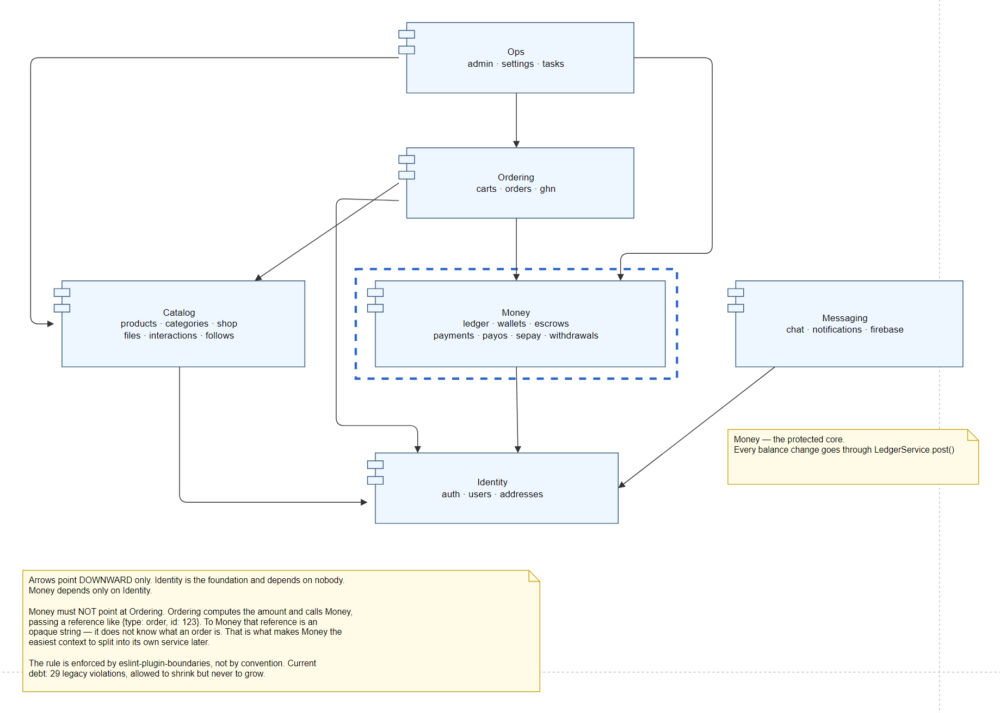
r4-fund-flowNhãn 1b · order paid via PayOS rộng ~145px nhét vào khe hở 90px — tràn lên cả hộp gateway_clearing lẫn escrow_hold.
Ba cột giãn ra cách nhau 150 / 120 / 140px, rộng hơn nhãn dài nhất chạy qua.
Nhãn 5 · seller requests chạm mép hộp seller.withdrawal_pending.
Nằm gọn trong khe.
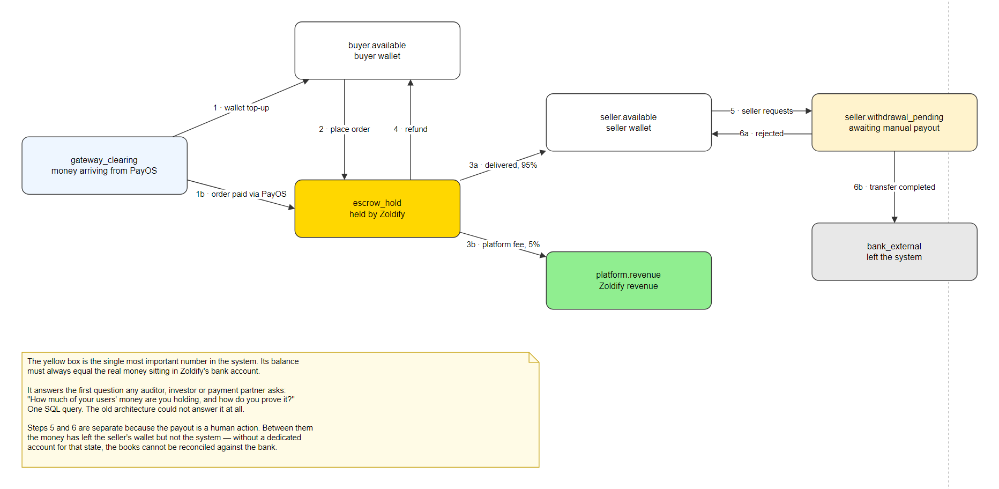
r5-state-order-lifecycleNhãn RELEASE escrow rơi đúng lên tên trạng thái refunded, che mất chữ. Cạnh delivered → done đi xuyên qua chính ô refunded.
Cạnh đó chạy vòng dưới đáy rồi lên, không chạm ô nào.
Nhãn [ship directly] rơi vào giữa ô processing, che mất tên trạng thái — nhìn vào hình thì ô đó tên là [ship directly].
Cạnh nhảy cóc chạy trong rãnh trống bên trái cột trạng thái.
Hai cạnh từ delivered gần như trùng phương, hai nhãn chồng nhau.
Mỗi cạnh một điểm neo khác nhau.
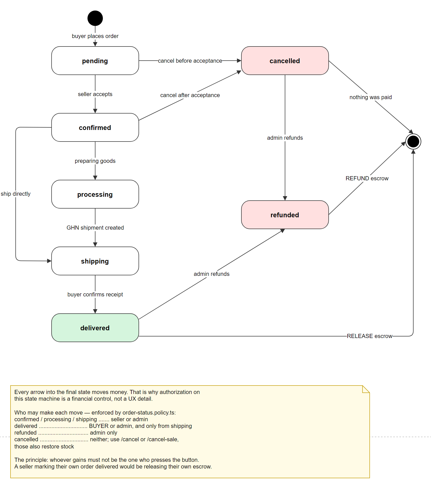
r6-state-escrow-lifecycleNhãn order cancelled or refunded chạm mép hộp refunded.
Cột phải đẩy ra 40px.
Ghi chú nằm đúng trên đường payment window expired.
Hạ xuống dưới, cách nét vẽ hơn 100px.
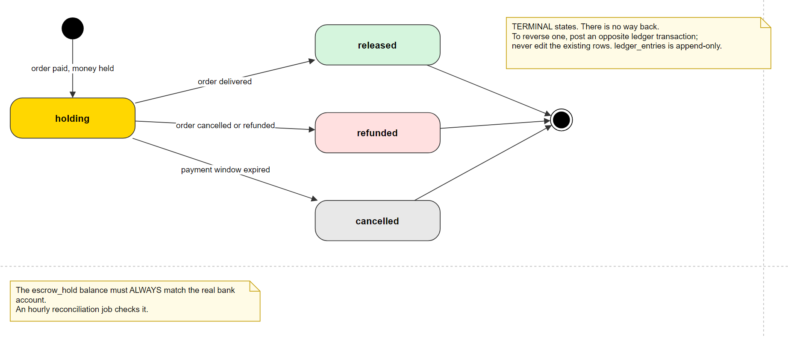
bảy sơ đồ còn lại
Những cái này đã được sửa và soi trong các đợt trước.
08-class-diagram có chỉnh tay trực tiếp trong draw.io — đừng chạy
drawio:make --force lên nó nếu không muốn mất phần chỉnh tay đó.
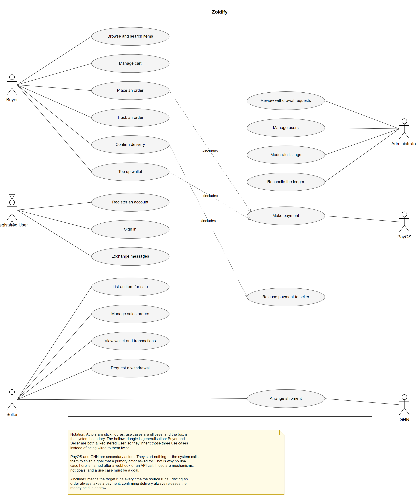
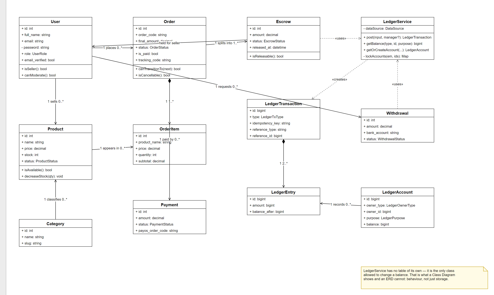
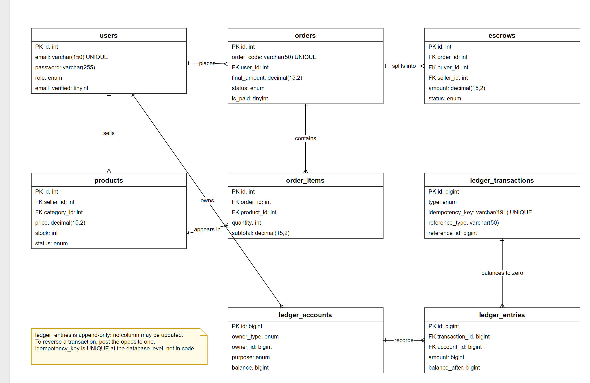
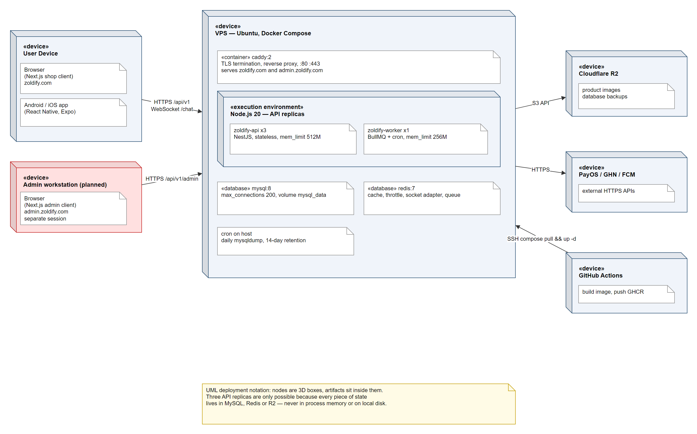
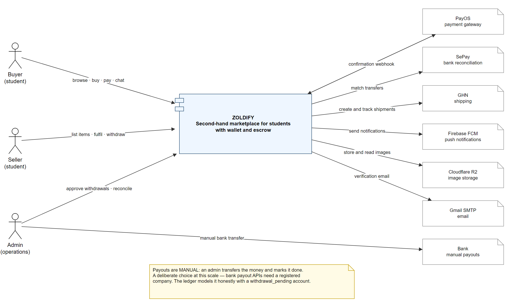
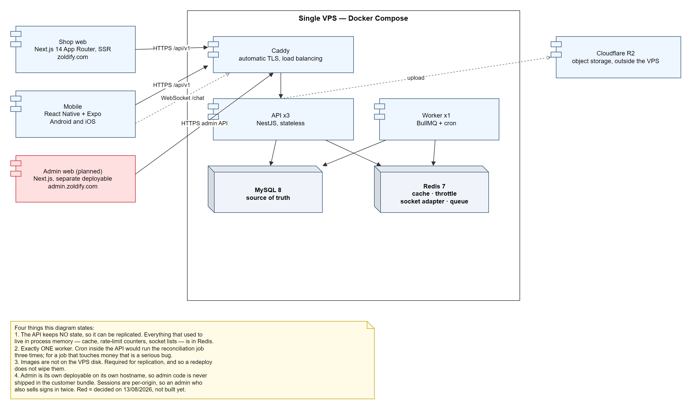
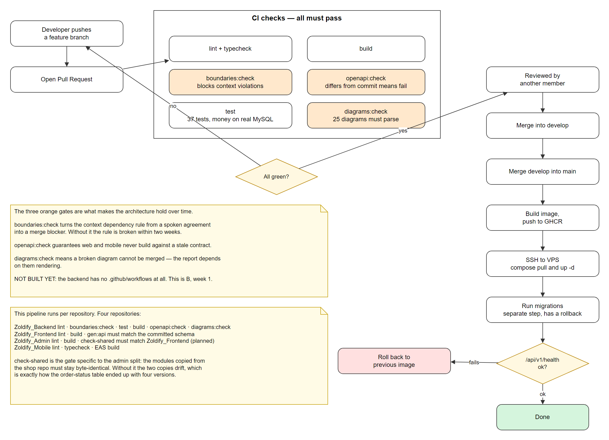